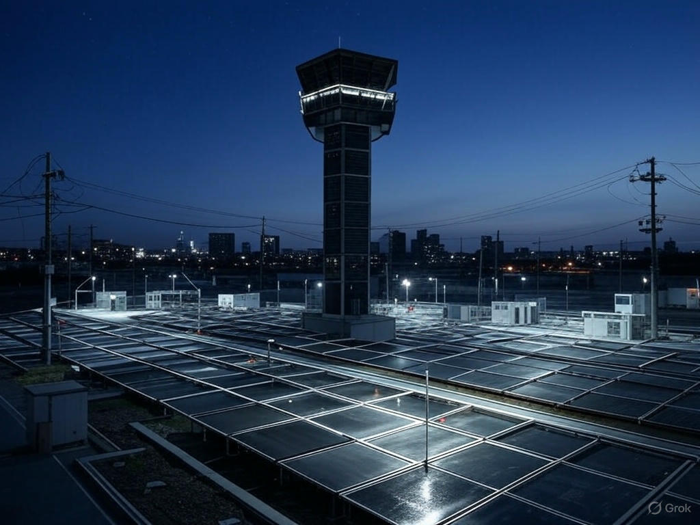

Redueix el teu consum, integra energies renovables i minimitza la teva petjada de carboni amb SmartGrid Optimizer.
 Coneix mésEl consum energètic ineficient en llars i empreses genera un gran malbaratament de recursos i una petjada de carboni elevada. Molts sistemes elèctrics no estan optimitzats per ajustar-se a la demanda real, provocant sobrecàrregues i un ús innecessari d’energia.
Es desenvoluparà una plataforma d’intel·ligència artificial que monitori i optimitzi el consum energètic en temps real. Es connectaran els dispositius elèctrics a la plataforma per analitzar patrons de consum i aplicar mesures d’estalvi automàtiques.